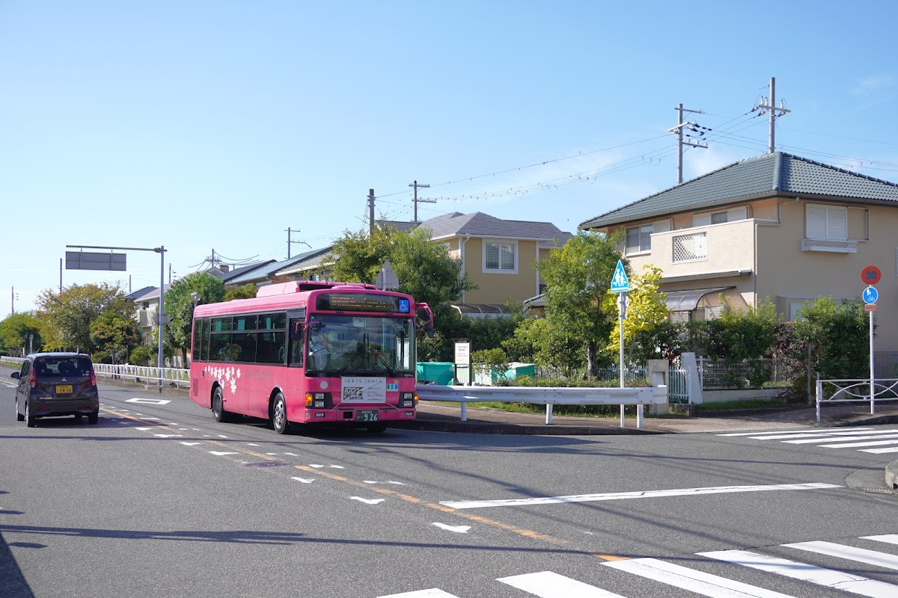

このサイトについて
① 概要
これは日本の大阪府貝塚市の水間鉄道の路線バス (水鉄バス) のバスの現在位置を表示するサイトです。
バスのアイコン画像が現在位置を示します。
現在位置は路線系統別に分けて表示しています。系統名をクリックすると切り替えできます。
バスのアイコンが表示されない場合、その時間帯に選択中の系統の運用がないことを示します。
② 現在位置の正確性
現在位置は時刻表に基づく推定であり、交通事情により遅延や運休が発生している場合があります。
③ 推奨環境
利用には Chrome、Safari (Apple 社端末)、Edge、Firefox、Opera の最新版を推奨します。古いバージョンでは正しく動作しない場合があります。
④ 問い合わせ
これは個人が制作した非公式サイトなので、不具合の報告等の連絡はこちらをご利用下さい。
問い合わせフォーム⑤ プライバシー
このサイトにはアクセス解析の「Google アナリティクス」を導入しています。
これは匿名化されたデータを収集するものであり、個人特定はできないのでご安心下さい。
Google のサービスを使用するサイトやアプリから収集した情報の Google による使用最終更新: 2024/10/28